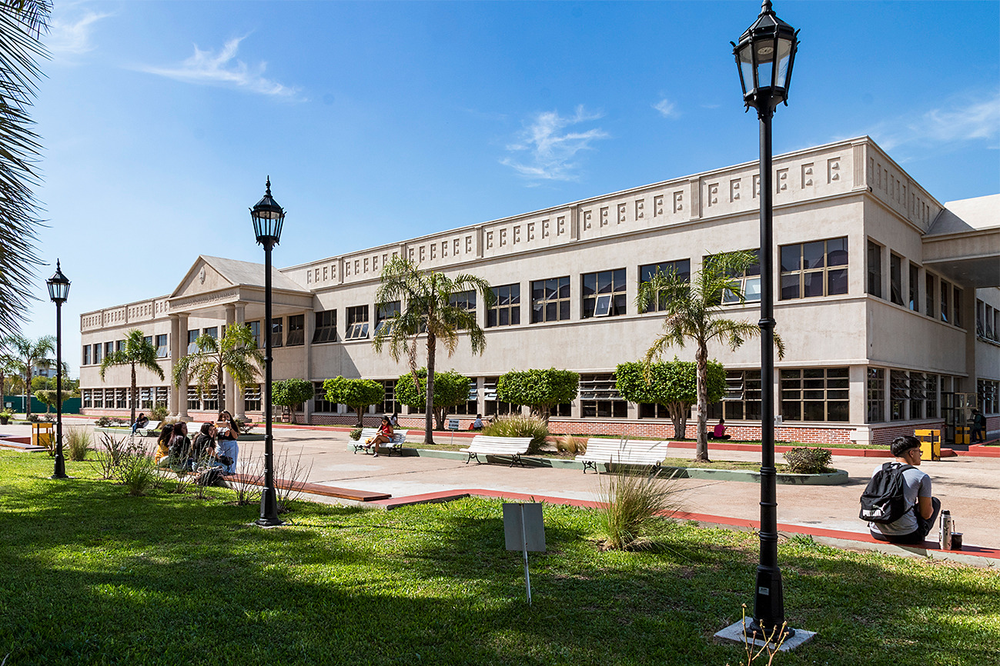

University Technical Degree in Web Development
Universidad Nacional de La Matanza (UNLaM)
(2024 - present, est. 2026)

Currently pursuing a university-level technical degree focused on web development and programming. Coursework completed so far includes:
- Graphic Design for the Web - Visual design principles applied to digital environments, including UI/UX prototyping with Figma.
- Basic Programming 1 - Fundamentals of programming logic and problem-solving.
- Mathematical Logic - Boolean algebra and logical structures applied to computing.
- Java - Object Oriented Programming - Application development using Java, covering classes, inheritance, encapsulation, and polymorphism.
- General Computing - Overview of computer systems, hardware, software, and digital environments.
- Technical English 1 (Written) - Reading and comprehension of technical IT documentation in English.
The program is designed to provide a comprehensive foundation in web development, preparing students for careers in programming, software development, and related fields. It combines theoretical knowledge with practical skills, including hands-on projects and real-world applications.